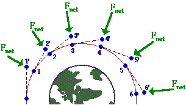

Projects and review
Block 1 Project 1: Ebola in Guinea, part I
In December 2013, an 18-month-old boy from a village in Guinea suffered fatal diarrhea. Over the next months a broader outbreak was discovered, and in mid-March 2014, the Pasteur Institute in France confirmed the illness as Ebola-Virus Disease caused by the Zaire ebolavirus.
Although the outbreak was first recognized in Guinea, it eventually encompassed Liberia and Sierra Leone as well. By July 2014, the outbreak spread to the capitals of all three countries. We are going to examine the time course of the epidemic using reports that were issued by the World Health Organization along with some concepts and techniques we have been studying in the first block of Math 141Z. Data are provided by the US Centers for Disease Control (CDC).
Data
The CDC data are provided to you as a dataframe named EbolaAll. The dataframe consists of 182 reports spread out over 18 months during 2014 and 2015. Each report is represented by a single row in the dataframe . Each report gives the number of new cases and disease-related deaths since the last report in each or three countries: Sierra Leon, Liberia, and Guinea. These values have been calculated from the raw, cumulative data. The data have been scrubbed to remove obvious errors.
Exploring the Data
We will begin by looking at some data. Use head(EbolaAll) to see the column headers and first 6 rows of data. As you can see, the EbolaAl dataframe is structured like a table, and each row contains multiple columns of data. The table below lists the column names found in EbolaAll dataframe along with a brief description of what the column records.
Date: Date when the World Health Organization issued the report
Gcases: Number of new cases in Guinea
Gdeaths: Number of new deaths in Guinea
Lcases: Number of new cases in Liberia
Ldeaths: Number of new deaths in Liberia
SLcases: Number of new cases in Sierra Leone
SLdeaths: Number of new deaths in Sierra Leone
TotCases: Total number of cases across all three countries
TotDeaths: Total number of deaths across all three countries
We will focus on the Guinea data. As we have done throughout this book, we model this data using the pattern-book functions.
In a SANDBOX, use
gf_point()to plot the number of new cases in Guinea (variablesDateandGcasesin dataframeEbolaAll).
**Question 1**: Look at the shape of the graph. Of the functions we have studied, which would be most appropriate as a model for the new cases in Guinea? If none of the functions we have studied best matches this data, select "None of the above." Although we are tempted to regard data sets as definitive, they are the culmination of an imperfect process of data collection in the field and imperfect processing/correction/amendment by people. For instance, most of the cases (and deaths) in the epidemic were never confirmed by viral testing and are considered “suspected cases.” Cases and deaths reported on one day might possibly be from previous days, and some cases and deaths were, no doubt, not reported.
In the Sandbox, run the following command to look at the data:
DT::datatable(EbolaAll)The resulting display is interactive; you can page through the many rows of data.
Question 2: Look through the data printout and find a data point form one of the World Health Organization reports that seems strange or inconsistent when compared with nearby reports. To receive full credit for this question, you must state the country and date of the report and explain your reasons for identifying this report as inconsistent.
Data Wrangling
An essential part of all projects involving data is to prepare the data for analysis: a process often called data wrangling. Although data wrangling is an important skill, it is not the topic of this book. So we will take care of the programming and present you with the results in the form of a data frame EbolaGuinea.
The wrangling accomplished two things: averaging the data over 7-report windows and extracting a numerical “day number” from the Date of each report.
First, rather than working with the year:month:day format of Date, it’s convenient to use a purely numerical quantity to represent time. So, we’ll translate the day when reports were issued into number of days from the initial report, presenting the result in the column Days. This makes the data-analysis programming easier, since all our mathematical software knows how to handle numbers, but not necessarily calendar dates.
Second, we’re going to smooth the number of cases and the number of deaths. We did this by averaging each day’s number-of-cases and number-of deaths over several report. As you can see in the data, the interval between reports is not constant. Some reports occur just one day after the previous report; sometimes there is a week between reports. The widely spaced reports tend to have much higher cases and deaths than reports that come every day. This is for the simple reason that each report gives the number of new cases and deaths since the previous report; there’s more time for the numbers to accumulate when there is a wide spacing between reports. The data reflect not just the process of the Ebola epidemic, but also the way the data were collected and reported, which is not directly of interest to us. To reduce this report-to-report fluctuation, we’ll average the number of new cases in each report with the three reports before and three reports after: a moving average over seven reports.
The result of our wrangling—the dataframe EbolaGuinea—includes three new columns:
Days: When the report was issued in terms of a count of days from the initial report.G7Rcases: Number of new cases in Guinea averaged across 7 reportsG7Rdeaths: Number of new deaths in Guinea averaged across 7 reports
Analysis of the outbreak
In your Sandbox, use gf_point() to plot the smoothed data in EbolaGuinea to show the time course of the epidemic. The variables you want to plot are G7Rcases versus Days. averaged number of new cases in Guinea (variables Days and G7Rcases in dataframe EbolaGuinea).
Question 3 Look at the shape of the graph. Of the functions we have studied, which would be most appropriate as a model for the new cases in Guinea? If none of the functions we have studied best matches this data, select “None of the above.”
It is well known that the infection rate during an outbreak follows a Gaussian pattern when the population interacts consistently. Ebola initially spreads exponentially as people pass the virus to one another. As people are exposed to the virus, there are fewer and fewer people who are still susceptible. The result is that the rate of exponential growth slows and, when the fraction of the population that is susceptible becomes small, the epidemic slows down and the number of new cases decays exponentially. Overall, the pattern of new cases day-by-day looks like a gaussian: zero cases per day before the outputbreak, exponential growth at first after the virus is introduced to the population, leveling out for a time, and exponential decay back to zero new cases.
The graph of G7Rcases versus Days looks only vaguely like a gaussian hump. One possible explanation is that the data summarize more than one outbreak, as the virus spreads from one region to another. We’ll treat each individual output as a gaussian and try to figure out how many of them make up the whole data. The individual outbreaks will be modelled as a gaussian function with it’s own center and width. The center for each gaussian corresponds to the peak of the hypothesized outbreak in one particular region.
We’ll combine the several gaussians in a linear combination. The scalar multiplying each gaussian is related to the size of the population exposed in each outbreak.
Here is an R/mosaic definition of a linear combination of two gaussian outbreaks.
my_mod <- makeFun(15800*(A*dnorm(t,m1,sd1) +
(1-A)*dnorm(t,m2,sd2)) ~ t) There are five parameters in the function. m1 the time when the first hypothesized outbreak peaked, m2 is the peak time of the second hypothesized outbreaks, and sd1 and sd2 reflect the duration of each outbreak. The parameter A represents the relative population sizes of the two regions. The number 15,800 reflects the total number of cases, which we know retrospectively. (The 15,800 includes a correction for the average day spacing between reports, but that detail need not concern us here.)
Note that selecting A sets the amplitude for both Gaussians, i.e. A and 1−A. The amplitudes A and 1-A sum up to 1. Arranging things this way effectively make A the size of the one outbreak, leaving 1-A to be the size of the other outbreak.
To see how these Gaussians work together, start with the following values: A = 0.5, m1 = 150, sd1 = 50, m2 = 350, sd2 = 50. Do not change the 15800 number which reflects the overall size of the whole outbreak, as opposed to the relative size of the hypothesized individual outbreaks: A and 1-A.
Use gf_point(), the pipe operator %>%, and slice_plot() to overlay your model on top of the data. Discrepancies between the model and the data can lead you to improve the model by adjusting the parameters. It’s to be expected that you will need several cycles of such parameter adjustments until you find a model that seems to agree with the data in a satisfactory way. to you Guinea cases along with your model.
Once you have adjusted your model to match the data as closely as you can, write down the parameters you used in your report, as well as the graph comparing the data to your final model.
Question 3: Find the longest time interval during which your model systematically overstates the number of cases. What’s the start and end of that interval? (Your answer can be rough, just so long as it points the reader of your report to the interval you mean.)
More data smoothing
Accurately modeling the Guinea case data with two gaussian functions is difficult. Despite the smoothing, the numbers in G7Rcases fluctuate irregularly and substantially from report to report.
Another way to smooth the data, that is, to reduce the irregular report-to-report fluctuations, is to accumulate the number of new cases to get the total number of cases up through each report. (This accumulation, at the end of the epidemic, will be the total number of people who came down with Ebola illness.)
Such a sum of new cases from the beginning of the outbreak through the day of each report is called a cumulative sum or “running total.” Keep in mind that this is not a number, but a new column of data giving the number of cases to date for each of the dates in the data.
To illustrate, the small set of numbers: [1 2 3 4 5 6]. The cumulative sum of this set shows the running total: [1 3 6 10 15 21]. Make sure you are comfortable with how the second set of numbers is related to the first.
The R function cumsum() calculates the cumulative sum on a column of data. You are going to need to do a little data wrangling; we can’t do it for you because we don’t know what model you decided to settle on.
There are many computer systems for data wrangling. You may have heard of one called Structured Query Language (SQL) which is a required skill listed in many job listings and a multi-billion dollar component of the economy. We will use a system called dplyr specially designed for the R language. In the dplyr system, the function mutate() is used to create a new column in a data frame by carrying out calculations on the existing columns.
Here is an R/dplyr command to generate the running total of cases. (We’re using Gcases instead of the smoothed G7Rcases because the cumulative summing will do the smoothing for us.)
EbolaGuinea <- EbolaGuinea %>% mutate(GcasesTotal = cumsum(Gcases)) It’s worthwhile to parse that command carefully. The part to the right of <- is an instruction for taking the EbolaGuinea data frame and adding a new column. The new column will be called GcasesTotal. The values in the new column will be generated by applying cumsum() to the Gcases column. Altogether, the right-hand side of the statement creates a new data frame that includes the new column. The left-hand side of the statement stores this new data frame under a name. For convenience, we’re using EbolaGuinea as that name. Effectively, the command as a whole, including the name assignment EbolaGuinea <- can be seen as updating the data frame with the new column.
You can verify that the new column is in place by showing the first several lines of the updated data frame:
head(EbolaGuinea) Use gf_point() to plot GCasesTotal versus Days. The graph will show how the number of cases accumulated over time to to the overall total for the epidemic as a whole.
Question 5: Consider which of the functions we have studied could be fitted to represent the
GCasesTotalversusDayscurve in your graph? It’s likely that none of the functions we have studied fits the data particularly well, but one of them will be better than the others.
We haven’t forgotten that you already created a model of the new cases by a linear combination of gaussian functions. What we want to do now is translate your model for the number of new cases each day into a model of the cumulative number of cases to date. In other words, we want to perform the same action that cumsum() does, but applied to your model rather than data.
To do this, you will replace the gaussian dnorm() function in your model with the sigmoidal pnorm(). No other changes are needed. This works because the gaussian and sigmoid functions are related to one another in just the same way as cumsum() relates the GCases column to the GCasesTotal column.
Remember that the Gaussian and sigmoid functions are related to one another. The sigmoid is the accumulation of the Gaussian, i.e. it is the cumulative sum of the Gaussian. We will use this relationship to improve your double Gaussian model.
Create a new function in your sandbox called my_mod_cumulative(). Plot this new function over the GCasesTotal versus Dates data. As before, you can do this with gf_point(), the pipe operator %>%, and slice_plot().
Question 6: Observe the rate of change (slope) of your model. The rate of change represents the number of new infections per day. Find the day on which your rate of change is greatest. Describe how this is related to the argmax of your model from Question 4.
Try adjusting the parameters in my_mod_cumulative() to better match the function to the GCasesTotal data. Some aspects of the outbreak can be better seen from the cumulative number of cases to date, and other aspects may be better seen with the-newcases-each-day data.
Now we will leverage the relationship between the Gaussian and sigmoid functions. Adjust your double Gaussian model and use the Question6 cumulative sums graph to evaluate your modifications. The procedure is outlined here:
Final thoughts
The gaussian as a model for the time course of new cases, and the sigmoid for the time course of accumulated cases to date, are well established. But here we’ve used two gaussians (or, equivalently, two sigmoids). So was there one outbreak or two?
Question 7: Think about why the two-gaussian model matches the data better than the one-gaussian model. What might this mean in terms of the structure of the Ebola outbreak in Guinea? Don’t be afraid to speculate and frame your answer in terms that a layman might understand.
The modeling cycle is all about using your current model to identify ways that you might be able to improve the model. Of course, in practice, you need to present your model for use, so you have to exit the cycle at some point. You’re at that point now, but we ask you to reflect a bit more.
Question 8: Given the results of your modeling efforts and your answer to Question 7, might it be better to model the outbreak using 3 or 4 Gaussians in our linear combination? What are the challenges associated with using more Gaussians?
Question 9: The
EbolaAlldata frame records the Sierra Leone and Liberia outbreaks as well as the outbreak in Guinea. How might you use that additional data to explore the validity of your modeling process?
Authors: Prof. Robert Wolverson, USAFA & Daniel Kaplan, Macalester College and USAFA.
Block 1 Project 2: Orbit dimensions
This activity will apply some of the concepts and techniques you’re learning to answer the following question:
How fast does a satellite move along its orbit?
As you can imagine, the answer is already known and you could look it up. The point of our reconstructing what is already known is to see the totality of a modeling project, even if it is a very simple one.
In textbooks and in-class demonstrations, students are often shown complete, flawless models. In reality, model construction is a matter of trial and error. Whoops! We’re supposed to say “modeling cycle.” That phrase doesn’t suggest anything about “error.” But in reality, modelers make mistakes, operate under misconceptions, collect erroneous data, misunderstand the purpose of building a model, and make all sorts of mistakes. To cope with this unhappy situation, good modelers are constantly checking and testing their models for inconsistencies.
To start, you should have
A good idea of what the eventual answer will be. Often, that idea comes from somewhat vague and imprecise knowledge. For example, you may have heard that it takes a satellite in low orbit about 90 minutes to complete one circuit of the Earth. You may also know that the length of the equator is roughly 40,000 kilometers. (This is actually the original definition of the meter.) A velocity is distance traveled over time, so a satellite in low orbit has a velocity of roughly \(40000 / 90\) km/minute, which comes out to 7400 meters/second.
A theory that relates what you want to know to what you already know. For our purposes, that theory comes directly from Isaac Newton in the 1680s: his laws of motion and his theory of universal gravitation.
The theory
We won’t assume that you have anything more than a vague understanding of Newton’s laws and theory of gravitation. The diagram shows the situation schematically.

The satellite is traveling clockwise along a curved trajectory encircling the Earth. The position of the satellite is shown at several times by the numbered blue dots. Let’s focus on the satellite at time 1.
The satellite is an object in motion. Newton’s First Law (“Lex I”) is stated in his 1687 book, Philosophiae Naturis Principia Mathematica (Mathematical principles of natural philosophy) on p.12
Translating into English, this is
Law I: Every body persists in its state of rest or uniform motion in a straight line, unless compelled to change that motion by forces impressed upon it.
The dashed line connecting the points labeled 1 and 2’ shows the path that the satellite would follow if there were no forces impressed upon it.
Yet there is a force impressed on the satellite: the gravitational attraction between the Earth and the satellite. This force accelerates the satellite perpendicular to its orbit (toward the center of the Earth) causing the satellite to follow a curved path rather than a straight path off into deep space. The acceleration of the satellite traveling at constant speed in orbit depends on both the velocity \(v\) of the satellite and the radius \(r\) of its orbit.
Task #1: Let \(A_1\) be the acceleration needed to keep the satellite in a circular orbit. Find a plausible relationship between \(A_1\), \(r\), and \(v\). One possibility is that the relationship is a general product of the form \[A_1 = v^n\ r^m .\] Use dimensional analysis to find \(n\) and \(m\). Recall that acceleration has dimension L/T\(^{2}\), velocity has dimension \(L/T\) and radius has dimension L.
Once you determine \(n\) and \(m\), write down the relationship \(A_1\) as a function of \(r\) and \(v\).
As we all know, gravity pulls all objects toward the center of the Earth. The acceleration \(A_2\) due to gravity on an object a distance \(r\) from the enter of the Earth is proportional to the mass of the Earth and is known to be \[A_2 = G\ M_e/r^2\] where \(G\) is a constant of proportionality and \(M_e\) is the mass of Earth.
In order for the satellite to stay in orbit, the two accelerations \(A_1\) (what’s needed to stay in orbit) and \(A_2\) (what the Earth’s gravity provides) must be equal.
Task #2: Set your expression for \(A_1\) equal to the expression for \(A_2\) and solve for the velocity \(v\) of the satellite (our original objective for this exercise). Your answer will involve \(G\), \(M_e\), and \(r\).
Use the known numerical values for \(G\) and \(M_e\) given in the next section to check that your answer makes sense.
The data
The data here come from scientific observations made over centuries that give us numerical values (with units) of \(M_e\) and \(G\) in the theory.
\(G\) is a universal constant (according to Newton’s theory of gravitation). The quantity is given by several sources as
\[G = 6.674 \times 10^{-11} m^3 /(s^2 kg).\]
Similarly, the mass of the Earth is given as
\[M_e = 5.972 × 10^{24} kg\]
These reported facts seem plausible, but it’s a good practice to check. Toward that end, check
- The dimension and units of \(A_2(v, r)\) are consistent.
- The value of \(A_2\) at the Earth’s surface is consistent with the famous value 9.8 m/s\(^2\).
Task #3: Finishing up.
Use the formula you derived for \(v\) as a function of \(r\), \(G\), and \(M_e\) to find \(v\) for a satellite in low orbit around the Earth. The official extent of the “Low Earth Orbit Region” is up to 2000 km. If you were using the altitude of the International Space Station (400 km), you would set \(r = r_e + 400km\), where \(r_e\) is the radius of the earth: 6, 378.1 km.
As always, you want to do the calculation in a way that helps you to spot possible errors. Here are two good practices:
- You have already confirmed (or should have) that your formula for \(v\) as a function of \(r\), \(G\), and \(M_e\) is dimensionally consistent. As you plug in numerical values for \(r\), \(G\), and \(M_e\), make sure to keep track of the units explicitly and that the result you get has proper units for velocity.
- Compare your result to the rough estimate of \(v\) for satellites in low orbit that you made at the beginning of this activity. If there is a discrepancy, review both your initial rough estimate as well as your gravity-based derivation of \(v\) to figure out where the inconsistency comes from. Then fix it.